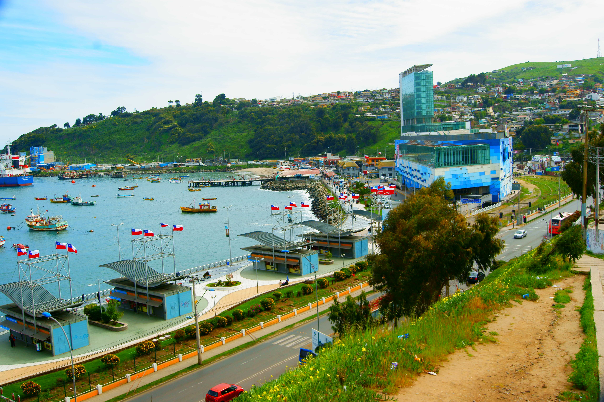
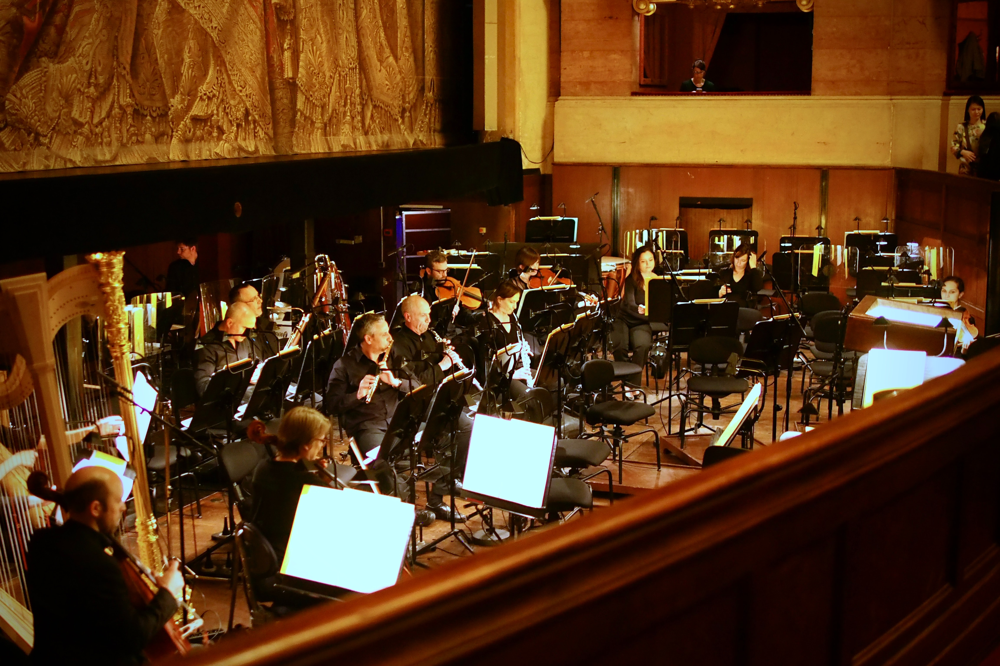

- viento
- 3,10 km de visibilidad
- 3,49 Mn oleaje
- 1,39 M h1 / 3 11,68 STP
San Antonio,
el Mayor puerto de Chile
Ver más fotos y videos
cifras destacadas
| 19.934.166 | +75.000 | $ 48.157.000 | |||
| toneladas movilizadas totales | pasajeros recibidos | en proyectos medioambientales |
|  |  | |
Estudio de avifauna en las lagunas de Llolleo y la desembocadura del río Maipo |
Paseo Bellamar, principal atractivo turístico del borde costero |
Organización y apoyo en actividades culturales de relevancia en nuestra comuna |
| Visita también nuestras iniciativas digitales | ||
| minisitios Para Niños y Escolares | San Antonio y Paseo bellamar |
| licitación pública SAI 01/2019 |
Resumen especificaciones técnicas para el desarrollo de tarea de mantención preventiva sistema VCMOC | alcance publicación |
| licitación pública SAI 19/2019 |
Diseño, implementación y mantención sitio web corporativo Empresa Portuaria San Antonio | alcance publicación |
| licitación pública SAI 19/2019 |
Contratación de servicios de mantención preventiva y arriendo de equipos para CCTV de la Empresa Portuaria San Antonio | alcance publicación |
- Av.Barros Luco Nº1613, of. 8 A
- San Antonio - Chile.
- Tel. (56) 2586000
- Fax (56) 2586010
- Inicio
- Sistema Portuario
- Puerto San Antonio
- Puerto Exterior
- Concesionarios Puerto San Antonio
- Planificación
- Integración Ciudad Puerto
- Puerto Sustentable
- Transparencia
- Asuntos Públicos
- Noticias
- Eventos
- Contacto
- Mapa de sitio
- Minisitios para niños y escolares
- San Antonio y Paseo Bellamar
- Trabaja con nosotros
- Denuncias